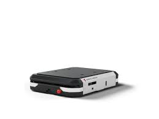

<!DOCTYPE html>
<html lang="ja">
<head>
<meta name="viewport" content="width=device-width,initial-scale=1">
<meta charset="utf-8">
<title>Cafe</title>
<meta name="description" content="ブレン">

<!-- css---->
<!-- <link rel="stylesheet" href="https://unpkg.com/ress/dist/ress.min.css">
<link href="https://fonts.googleapis.com/css?family=Philosopher" rel="stylesheet"> -->
<link rel="stylesheet" href="css/stylesheet.css">
<link href="css/stylesheetscand.css" rel="stylesheet">
<!-- <link href="css/style.css" rel="stylesheet"> -->
<!-- favicon---->
<script src="js/vendor/modernizr.custom.min.js"></script>
<script src="js/vendor/jquery-1.10.2.min.js"></script>
<script src="js/news.js"></script>
<!-- favicon---->
<style>

@charset "UTF-8";

html {
		font-size:100%;
}
body {
	    font-family: "Yu Gothic Medium", "游ゴシック Medium", YuGothic, "游ゴシック体", "ヒラギノ角ゴ Pro W3", sans-serif;
	line-height:1.7;
	color:#432;
}
a {
	text-decoration:none;
}
img {
	max-width: 100%;
}
#taitle{
	  padding: 20px;              /* 余白指定 */
    background-color:  #ddd;    /* 背景色指定 */
    height: 200px;              /* 高さ指定 */
    width: 100%;               /* 幅指定 */
    position: relative;         /* 位置指定の基準点にする */
}
#item{
	background-color: #2196F3;   /* 背景色指定 */
 position: relative;          /* 位置指定 */
 top: 10%;                     /* 位置指定 */
 bottom:  0;                  /* 位置指定 */
 left:  0;                    /* 位置指定 */
 right:  0;                   /* 位置指定 */
 margin:  auto;               /* 中央寄せ */
 width:  80%;               /* 幅指定 */
 max-width: 1000px;
 min-width: 300px;
 height: 80px;                /* 高さ指定 */
 text-align: center;
}
#gazou{
	background-color: #ff0000;
	height: 550px;
	width: 100%;
	margin-top:0px;                     /* 位置指定 */
}
#gazou-item{
	background-color: #2196F3;   /* 背景色指定 */
 position: relative;          /* 位置指定 */
 top: 10%;                     /* 位置指定 */
 bottom:  0;                  /* 位置指定 */
 left:  0;                    /* 位置指定 */
 right:  0;                   /* 位置指定 */
 margin:  auto;               /* 中央寄せ */
 width:  50%;               /* 幅指定 */
 min-width: 400px;
 height: 300px;                /* 高さ指定 */
}
#image{
	position: absolute;
	margin-top: 10px;
  text-align : center;
	width: 100%;
	height: 100%;
}
#item p{
	font-size: 110px;
}
.btana{

}
#botun{
	width: 30%;
	min-width: 200px;
	color: #fff;
  text-decoration: none;
  font-weight: bold;
  background: #cd853f;
  padding: 10px 2px;
	border-radius: 2vw;
	font-size: 20px;
	margin: auto;
	margin-top: 100px;
}
@media (min-width: 1200px) {
	#item p{
	  font-size: 100px;
	}
}
@media (max-width: 800px) {
	#botun{
		width: 30%;
		min-width: 200px;
		color: #fff;
	  text-decoration: none;
	  font-weight: bold;
	  background: #cd853f;
	  padding: 10px 2px;
		border-radius: 2vw;
		font-size: 20px;
		margin: auto;
		margin-top: 100px;
	}

	#item{
		background-color: #2196F3;   /* 背景色指定 */
	 position: relative;          /* 位置指定 */
	 top: 20%;                     /* 位置指定 */
	 bottom:  0;                  /* 位置指定 */
	 left:  0;                    /* 位置指定 */
	 right:  0;                   /* 位置指定 */
	 margin:  auto;               /* 中央寄せ */
	 width:  80%;               /* 幅指定 */
	 max-width: 1000px;
	 min-width: 300px;
	 height: 80px;                /* 高さ指定 */
	 text-align: center;
	}
	#item p{
	  font-size: 50px;
	}
	#image{
		position: absolute;
		margin-top: -40px;
	  text-align : center;
		width: 100%;
		height: 100%;
	}
}
footer{
 position: absolute;
 background: #432;
text-align: center;
width: 100%;
height: 70px;
top: 95%;
}

/* footer{
 position: absolute;
 background: #432;
text-align: center;
width: 100%;
height: 5vw;
top: 30vw;
} */
footer p{
color:#fff;
font-size:1vw;
padding-top:2vw;
}

/*
---------------*/
@media screen and (max-width: 800px)
{
	footer{
	 position: absolute;
	 background: #432;
	text-align: center;
	width: 100%;
	height: 7vw;
	top: 198vw;
	}
	footer p{
	color:#fff;
	font-size:1vw;
	padding-top:2vw;
	}
}
</style>
</head>
<body>
<footer>
<div class="wrapper">
<p><small>&copy; shintec hozumi</small></p>
</footer>
<div id="taitle"><div id="item"><p>異 常 発 生!</p></div></div>
<div id="gazou"><div id="gazou-item"><div id="image">
<div id="botun"><a href="" class="btna">クイックナビを開く</a></div></div></div>


</body>
 </html>
